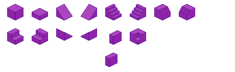
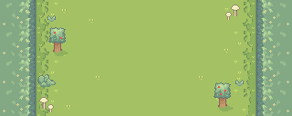

Senior Project
INTERIM
Sutton Fritz
Week 5.
This week I focused on implementing the basics of movement and pathfinding for isometric tiles in Unity. First, I researched assets where I found
this one
on pathfinding. I also worked on creating the tile designs:

I also worked on the aesthetic where I designed this:

Artist Spotlight:A career I am very interested in is becoming a 3D game artist. After researching artists in the industry, I came across Zikun (Quentin) Cheng. Cheng is a 3D character artist for Blizzard Entertainment, a AAA game company. He has designed many assets for some of my favorite games such as Overwatch. I looked into his experience on his LinkedIn profile where I discovered he originally worked as a 3D artist for Delta Air Lines. I specifically want to work for videogames because I think it is more interesting and creative, but I realize that many in the industry gain experience outside of gaming first. His portfolio is not very complex, but it showcases very detailed character designs, process documentation, and a project summary. Cheng is based in Irvine, CA, which makes sense since that is where Blizzard’s headquarters are. Three Opportunities:
1. Artiste technique: This is a 3D artist position for Epic Games, specifically for Fortnite, where you are responsible for creating character designs and environments. It is in-person in Montreal, and requires that you speak French.
2. Senior 3D Generalist: This position is for Blizzard Entertainment and requires a lot of experience in softwares like Maya and Houdini. Obviously this is not an entry-level position, but it let me know what softwares I should begin developing skills in.
3. Freelance: This role allows for maximum creative freedom, but may be unstable since there is no guarantee for available work. Freelancers in this industry work many hours, but do not get paid as much as full-time designers.